A collection of four core experiments exploring artificial-life and computational dynamics:
rd.py)physics/__main__.py + diffusion.cl)golem.py)evo/__main__.py)I am grateful to my advisor, Dr. Smita Krishnaswamy, for her guidance and encouragement throughout this project. Thanks to Xingzhi Sun and Jake Kovalic for introducing me to the agent-based modeling ideas that inspired part of this work.
Warm thanks to my friends in the Computer Science Department and my peers in Davenport College—our discussions over tea, coffee, or after a run were invaluable for troubleshooting and brainstorming.
Finally, I owe my deepest appreciation to my parents and brother for bearing with my sometimes obsessive focus on these simulations and for their constant support.
Life emerges from the interaction of simple physical and chemical processes under constraints of energy and matter. In this thesis, I investigate four computational models—each built on minimal local rules and conserved quantities—to explore how lifelike behaviors arise in silico.
First, a reaction–diffusion chemistry framework embeds virtual cells, endowed with internal chemical channels and gene regulatory networks (GRNs), within a diffusive medium of seven species (H₂O, CO₂, O₂, sugar, ATP, protein, mitogen). Cells sense and respond to local gradients, exhibiting chemotactic trails and tandem motility before resource depletion drives near‐extinction.
Second, a GPU-accelerated physics cellular automaton abstracts material phases (solid, liquid, gas, void) through a single “solidity” parameter per pixel. Simple gravity‐ and diffusion‐like exchanges, executed in parallel on the GPU, generate bubble nucleation, buoyant rise, and phase separation—achieved at a ∼55× speedup over a NumPy baseline.
Third, GOLEM extends Conway’s Game of Life by equipping each cell with explicit mass and energy stores and routing energy with an evolvable neural CA policy. Here, birth and death events consume and release energy, yielding novel still‐life equilibria and transient glider oscillators stabilized by conservation laws.
Finally, a NEAT‐driven grass–prey coevolution simulates autotrophs and herbivores whose neural controllers evolve sensory‐motor strategies. Grass patches develop directional growth, prey learn infiltration and overexploitation tactics, and unchecked predation leads to self‐extinction, highlighting the need for regulatory feedback in open‐ended evolution.
Together, these experiments demonstrate that simple, physically motivated rules—paired with minimal control architectures and hardware acceleration—can reproduce core aspects of life: metabolism, movement, growth, adaptation, and self‐organization. This work lays a foundation for future artificial‐life frameworks that integrate chemistry, mechanics, and adaptive control across scales.
Building on agent-based models of cancer and immune dynamics (e.g. the Krishnaswamy Lab’s EuclideanSimulation), this experiment abstracts away biochemical and cell-type specifics to focus on fundamental life principles. The two-dimensional grid carries seven continuous species—water, CO₂, O₂, sugar, ATP, protein, and a generic mitogen—that diffuse per Fick’s law and react via a unified reaction list with both background and cell-catalyzed rates.
Each cell occupies one grid site and maintains three
functional channels for every chemical:
1. Reaction channel (enzymes): positive values catalyze
production reactions; negative values catalyze consumption.
2. Transport channel (transporters): controls active
import or export against gradients.
3. Motor channel (motors): dictates energy-driven
movement toward or away from chemical cues.
Channels are driven by a small, evolvable neural network that takes environmental concentrations and a cell’s current channels as inputs and outputs channel update values at an ATP cost—abstracting gene-to-protein translation and receptor dynamics into a unified, energy-conscious decision process. When mitogen and resource thresholds are met, cells divide—splitting chemical resources and mutating network weights—while ATP depletion or lifespan limits trigger death and release of internal contents back into the field.
This minimal yet biologically inspired framework emphasizes metabolism, chemotaxis, transport, and division as the core capabilities of life, enabling emergent gradient formation, differentiation-like cycles, and synthetic-biology behaviors without hard-coding specialized cell types.
This experiment takes inspiration from the Biomaker CA framework (Randazzo et al.), which simulates a richly typed biome via simple, local cellular-automaton rules. Rather than hard-coding several cell types like they do (stem, leaf, root, seed, air, dirt, etc.), we abstract every material down to its intermolecular force characteristics. Each pixel’s RGBA color represents a four-channel “phase” vector (solid, gas, liquid, void), and we assign each phase a solidity parameter that proxies bond strength—strong ionic/covalent bonds for solids, hydrogen bonds for liquids, and weak London forces for gases.
At each time step, an OpenCL kernel runs over the grid and applies two core local exchanges:
By tuning solidity values (e.g. 0.999 for rock, 0.5 for water, 0.001 for air), we can observe how the system self-organizes into lifelike material interactions—liquids pool, solids pile, and something like bubbles form when low-solidity “air” rises through the higher-solidity “water” matrix. A NumPy reference implementation on the CPU highlights the dramatic throughput advantage of GPU compute.
This experiment unifies falling-sand dynamics and fluid behavior, which could be useful in future artificial-life models that integrate material physics with metabolism, chemotaxis, and multicellular mechanics.
This experiment reimagines Conway’s Game of Life as a miniature physics sandbox governed by conservation laws and entropy. Inspired by Einstein’s E = mc2, we treat mass and energy as interconvertible yet globally conserved quantities: a cell birth consumes one unit of energy, and a cell death releases that energy back into the field. In the absence of life, the system tends toward “entropy”–increasing equilibrium under standard Life rules.
To capture how living patterns locally decrease entropy, each cell carries both mass and energy stores and participates in a learned, decentralized energy‐routing process. We augment the binary GoL grid with a continuous energy channel plus a set of hidden “genome” channels. A neural‐policy CA—analogous to Growing Neural Cellular Automata—reads local mass, energy, and hidden channels, then directs energy flows across each 3×3 neighborhood, conserving the total and modeling how organisms “hijack” physics to persist ordered patterns. Cells inherit their parents’ crossed-over policy parameters upon reproduction and lose them at death, enabling evolutionary adaptation of energy‐management strategies.
By fusing Life’s simple birth/death topology with energy–mass conversion, entropy considerations, and an evolvable neural CA policy, GoLEM aims to exhibit richer emergent phenomena—sustained oscillators, self-organized energy waves, and resource-driven pattern formation—that mirror how real organisms defy equilibrium to survive and replicate under thermodynamic constraints.
In this experiment, we simulate an abstract ecosystem of autotrophic “grass” and herbivorous “prey” on a toroidal grid, with both species’ behaviors governed by evolvable neural controllers optimized via the NEAT algorithm. Each organism carries a genome that encodes a Compositional Pattern-Producing Network (CPPN), which in turn generates a phenotype neural network mapping local sensory inputs to action outputs.
By coevolving these simple sensory-motor networks, grasses adapt growth patterns that reduce predation risk, while prey evolve foraging tactics—clustering, dispersal, ambush—and even mutual breeding behaviors. Over thousands of generations, this setup yields rich ecological dynamics: spatial patchiness in grass, prey herding and avoidance, and arms-race feedback loops, illustrating how minimal neural controllers under selection can generate complex, lifelike interactions.
.
├── evo/ # NEAT-based coevolution experiments
│ ├── nn/ # neural network modules
│ │ ├── ffnn.py
│ │ ├── graphs.py # network visualization and graph functions
│ │ ├── phenotype_nn.py
│ │ └── rnn.py
│ ├── genome.py # genome and evolutionary operators
│ ├── functions.py # activation functions
│ ├── evolve.py # Population class
│ ├── game1.py # grass–herbivore sim
│ └── config.py # NEAT hyperparameters
│
├── physics/ # GPU physics simulation
│ ├── diffusion.cl # OpenCL kernel
│ ├── gump.jpg # input image
│ └── game3.py # host code (PyOpenCL)
│
├── rd.py # Reaction–Diffusion CA
├── golem.py # GoLEM: Game Of Life Energy-Mass
│
├── assemble_videos.sh # Bash script to assemble MP4s
├── plot_metrics.py # Python script to generate plots
├── out/ # Auto-generated outputs
│ ├── rd/
│ │ ├── frames/
│ │ └── metrics.csv
│ ├── physics/
│ │ ├── frames/
│ │ ├── gpu_times.csv
│ │ └── cpu_times.csv
│ ├── golem/
│ │ ├── frames/
│ │ └── stats.csv
│ ├── evo/
│ │ ├── frames/
│ │ └── metrics.csv
│ ├── plots/
│ │ ├── reaction_diffusion_means.png
│ │ ├── physics_timing.png
│ │ ├── golem_summary.png
│ │ └── evo_population.png
│ └── videos/ # MP4s assembled by `assemble_videos.sh`
│ ├── rd.mp4
│ ├── physics.mp4
│ ├── golem.mp4
│ └── evo.mp4
├── Pipfile # project dependencies
├── Pipfile.lock
└── README.md # ← you are hereClone this repository
git clone https://github.com/jpsank/thesis.gitInstall dependencies
pipenv install
pipenv shellor
conda create -n alife python=3.11
conda activate alife
conda install -c conda-forge \
numpy matplotlib pandas pyopencl torch \
jax jaxlib networkx pygame imageio pygraphvizEnsure you have an OpenCL driver for your GPU (for GPU physics simulation)
Activate your virtualenv and then run each script as follows:
python rd.py \
--width 100 \
--height 100 \
--dt 0.1 \
--steps 5000 \
--vis-interval 10 \
--output-dir out/rdpython -m physics \
--input-image physics/gump.jpg \
--width 576 \
--height 384 \
--steps 500 \
--compare-cpu \
--output-dir out/physics \
--displaypython golem.py \
--size 150 \
--steps 1000 \
--output-dir out/golempython -m evo \
--steps 5000 \
--save-interval 10 \
--output-dir out/evoAssemble Videos
./assemble_videos.shGenerates:
out/videos/rd.mp4
out/videos/physics.mp4
out/videos/golem.mp4
out/videos/evo.mp4Generate Plots
python plot_metrics.pySaves figures to out/plots/.
Direct Inspection
out/<experiment>/frames/*.pngout/plots/*.pngEnvironmental Metrics
| Timestep | H₂O | CO₂ | O₂ | Sugar | ATP | Protein | Mitogen |
|---|---|---|---|---|---|---|---|
| 0 | 1.00000 | 1.00000 | 1.00000 | 1.00006 | 1.99998 | 0.000001 | 0.06094 |
| 2999 | 0.98448 | 0.98409 | 0.98109 | 0.98825 | 1.82319 | 0.02165 | 0.00383 |
Population Metrics (at T = 2999)
- Live‐cell count: 2
- Mean Internal ATP: 0.9116
Qualitative observations:
1. Rapid mitogen‐driven expansion: Cells adjacent to
the central mitogen patch divide explosively, creating an outward-moving
front early in the run (Figure 1a at t = 50).
2. Trail-forming motility and tandem movement: Around
t ≈ 860, motile cells leave detectable chemical trails and
occasionally move in coordinated pairs (Figure 1b), reflecting emergent
chemotactic following behavior.
3. Long-term survivors: By t = 3000, two cells
remain alive (Figure 1c), suggesting evolved strategies for exploiting
residual gradients or minimizing energy expenditure under resource
scarcity.
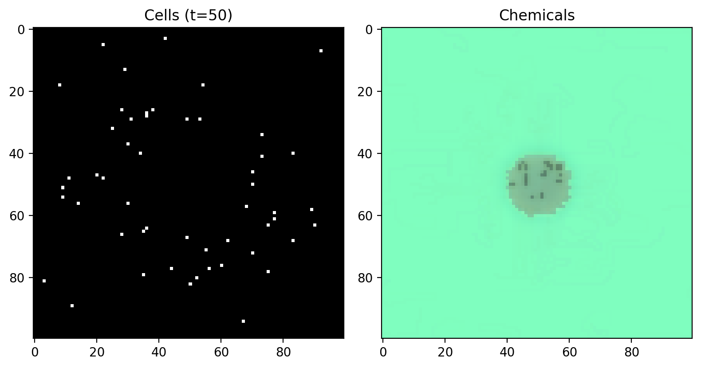 |
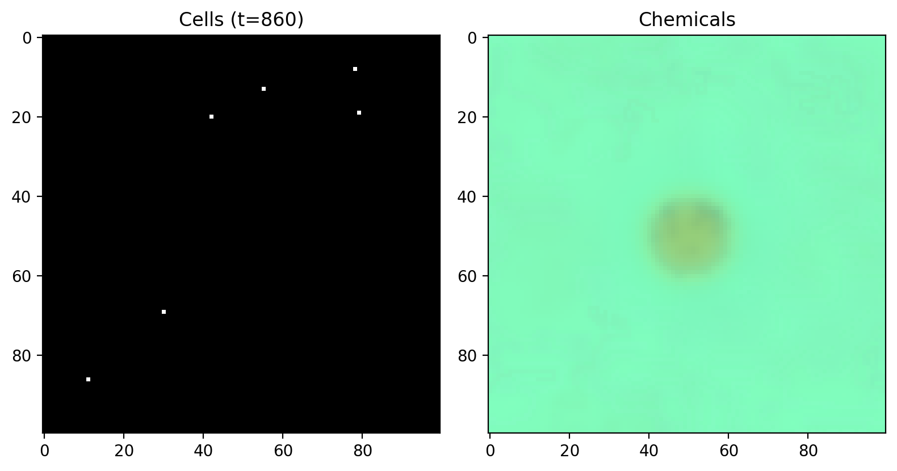 |
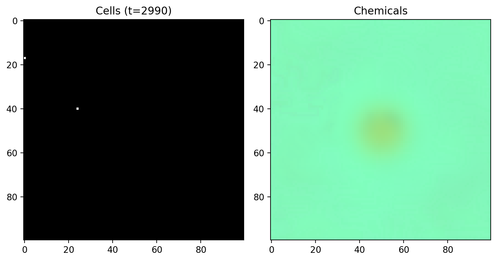 |
|---|---|---|
| Figure 1a: Early growth (t = 50) | Figure 1b: Tandem motility (t = 860) | Figure 1c: Survivors (t = 2990) |
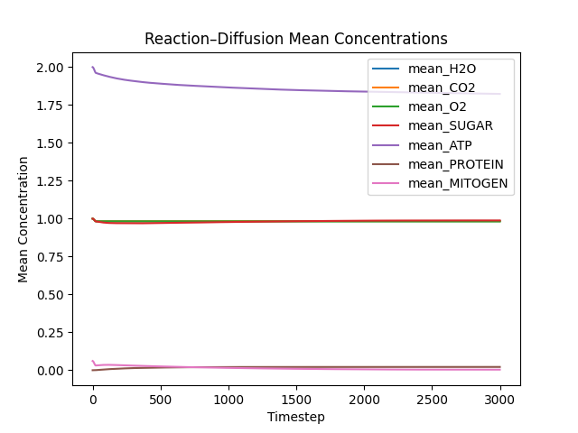 |
|---|
| Figure 1d: Mean chemical concentrations over time |
Discussion of RD Results (see “Discussion”
below):
- The slight decrease in H₂O, CO₂, and O₂ and the drop in mitogen
reflect consumption by cell-mediated reactions, while ATP remains
elevated from accumulated metabolic output.
- Emergent motility behavior confirms that simple transporter and motor
channels, driven by neural network outputs, suffice to produce
chemotactic-like dynamics without explicit movement rules.
- The persistence of two cells highlights the need for dynamic resource
inputs—future work could introduce periodic mitogen or sugar influx to
sustain a stable population.
Performance Metrics
| Metric | Value | |————————-|————| | Avg. GPU time/step | 1.36 ms | |
Avg. CPU time/step | 74.51 ms | | GPU → CPU Speedup | ×54.8 |
Qualitative Observations:
1. Bubble-like air pockets: Pockets of the low-solidity
“air” phase (with higher values of green color) spontaneously coalesce
and rise through the higher-solidity solid (red) and “water” phase
(blue), forming discrete collections of bubbles that ascend and escape
at the top—reminiscent of lava-lamp dynamics (Figure 2a).
2. Persistent liquid trapping: The high-solidity
“solid” phase (red) clumps together so strongly that water and even gass
trapped beneath remains confined, producing under-solid fluid pockets
(Figure 2b).
3. Layered material interactions: Over time, we observe
layering where solids settle, liquids pool, and gases
dissipate—demonstrating realistic phase separation and buoyancy effects
driven by our simple solidity-based exchange rules (Figure 2c).
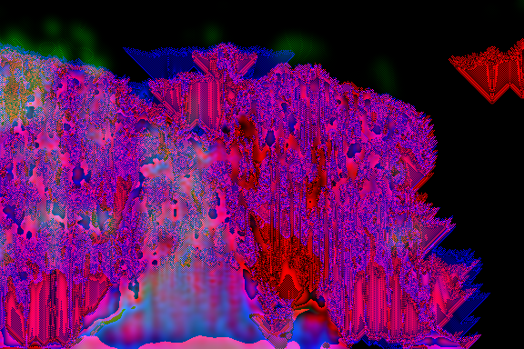 |
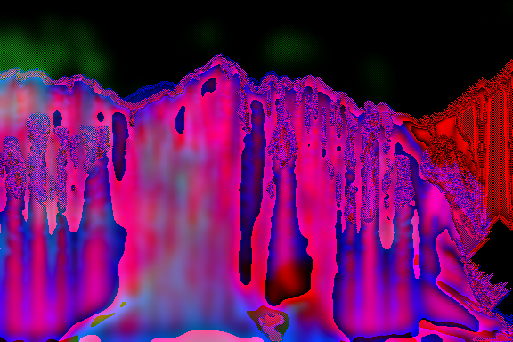 |
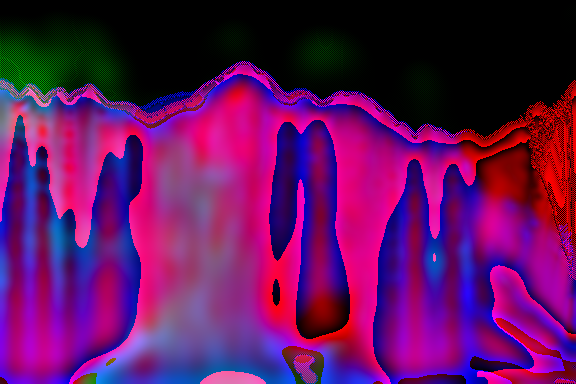 |
|---|---|---|
| Figure 2a: Bubble nucleation & rise (t = 100) | Figure 2b: Subsurface bubbles & trapping (t = 250) | Figure 2c: Surface clearance & layering (t = 400) |
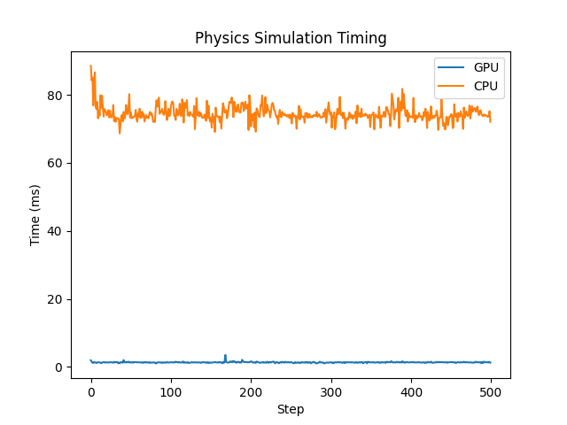 |
|---|
| Figure 2d: Per-step timing comparison for GPU vs. CPU implementations |
Discussion of Physics Results (see “Discussion”
below):
- Although the visual output deviates from exact fluid dynamics, our
diffusion and gravity formulas capture key lifelike behaviors—especially
bubble formation, buoyant rise, and phase separation.
- Color-coding (blue = liquid, green = gas, red = solid) highlights
these interactions vividly.
- GPU acceleration is critical: a ~55× speedup over the CPU baseline
enables real-time exploration of material self-organization at
scale.
Equilibrium Metrics
Initial transient gives way to a stable regime after a few dozen steps,
when most mobile structures have died out.
| Timestep | Total Mass | Total Energy | Conserved Sum | Live Cells |
|---|---|---|---|---|
| 1 | 3201.0 | 1349.0 | 4550.0 | 3201 |
| 10 | 2485.0 | 2065.0 | 4549.9 | 2485 |
| 60 | 2466.0 | 2084.0 | 4550.0 | 2466 |
| 100 | 2466.0 | 2084.0 | 4550.0 | 2466 |
Key Observations:
1. Glider‐like oscillators: Shortly after random
initialization, mobile glider‐like structures emerge (e.g., around
t = 10) that traverse the grid under combined Life and energy
rules (Figure 3b).
2. Transition to still‐life equilibrium: By t
≈ 60, most gliders have burned out, leaving only small oscillators and
novel still‐life configurations that are sustained by the introduced
energy constraints—these stills do not appear in classical GoL
(Figure 3c).
3. Conserved dynamics: After t = 60, total
mass and energy fluctuate minimally around their conserved sum (~4550),
and live‐cell count remains constant, indicating a true non‐trivial
equilibrium enforced by energy‐mass routing.
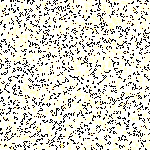 |
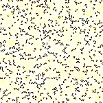 |
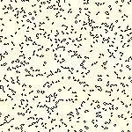 |
|---|---|---|
| Figure 3a: Random initialization (t = 0) | Figure 3b: Glider‐like dynamics (t = 10) | Figure 3c: Still‐life equilibrium (t = 60) |
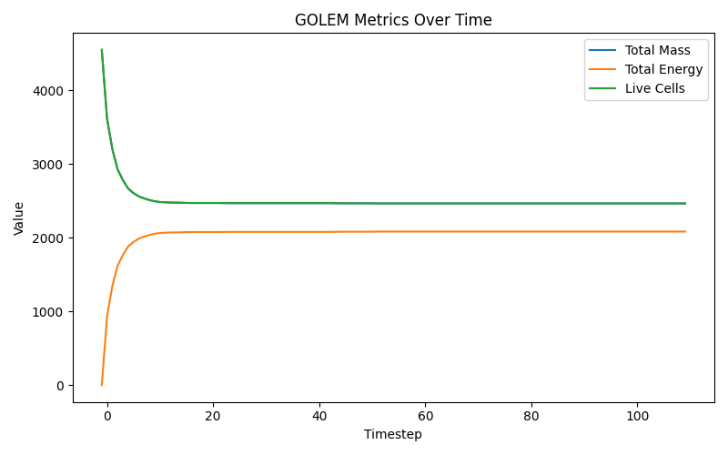 |
|---|
| Figure 3d: Total mass, energy, and live cells over time (note 1 mass = 1 live cell) |
Discussion of GoLEM Results (see “Discussion”
below):
- Energy constraints transform classic GoL dynamics, suppressing
unbounded glider proliferation and enabling novel still‐lifes not seen
in the original automaton.
- The persistent still‐life patterns underscore how mass–energy
conservation and routing policies can stabilize structures that would
otherwise not survive.
- This equilibrium regime suggests potential for studying energy‐based
pattern resilience and controlled perturbations to generate complex
behaviors.
Note: A subtle yellow tint on dead (formerly white) cells and a red tint on live (formerly black) cells indicate higher energy levels.
Population Metrics
| Timestep | Grass Population | Prey Population | |———:|—————–:|—————-:|
| 0 | 20 | 100 | | 800 | 737 | 152 | | 2000 | 412 | 215 | | 2325 | 150 |
0 | | 4999 | 180 | 0 |
Qualitative Observations:
1. Directional grass expansion (Figure 4a, t =
200): Grass genomes evolve to favor reproduction in specific
directions, yielding elongated patches rather than uniform spread.
2. Prey congregation and infiltration (Figure 4b, t =
900): As grass patches mature, prey cluster at their edges,
then evolve to penetrate into grass areas to feed directly on interior
cells.
3. Aggressive infestation (Figure 4c, t =
1500): Upon eating, prey proliferate in all directions from
grazing sites, creating dense infestations that overrun grass
clusters.
4. Prey extinction (Figure 4d, t = 2300):
Unchecked reproduction depletes grass resources, causing prey to exhaust
their energy budgets and drive themselves extinct; only grass remains
thereafter.
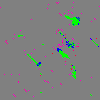 |
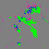 |
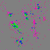 |
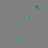 |
|---|---|---|---|
| Figure 4a: Directional grass patches (t = 200) | Figure 4b: Prey infiltration (t = 900) | Figure 4c: Infestation outbreak (t = 1540) | Figure 4d: Only one prey left, soon to die (t = 2300) |
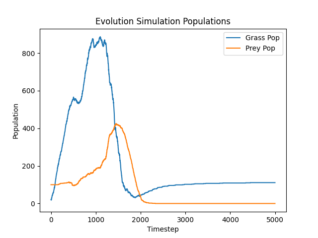 |
|---|
| Figure 4e: Grass and prey populations over time |
Discussion of NEAT Evo Results (see “Discussion”
below):
- Grass learns anisotropic spreading patterns, which prey exploit by
clustering and penetrating clusters.
- Prey’s aggressive reproduction without negative feedback leads to
resource exhaustion and self-extinction.
- Introducing evolutionary constraints—such as energy costs for
reproduction beyond simple thresholds, or negative density-dependent
effects—could stabilize long-term coexistence.
Across these four experiments, we observe how simple local rules, when combined with conserved quantities and evolvable control, give rise to rich, lifelike behaviors:
Overall, these experiments chart a spectrum from purely chemical pattern‐formation to agent‐based coevolution, unified by core ideas of resource conservation, local decision‐making, and emergent organization. They demonstrate that even vastly simplified proxies for metabolism, physics, and evolution can produce behaviors reminiscent of real life, laying groundwork for future artificial‐life frameworks that integrate chemistry, mechanics, and adaptive control.
This thesis explored four distinct yet thematically linked experiments that demonstrate how simple local rules, conserved resources, and evolvable control can give rise to rich, lifelike phenomena:
Reaction–Diffusion Chemistry with Virtual Cells & GRNs showed that embedding cells with minimal internal chemistry and gene regulatory networks into a reaction–diffusion medium yields emergent motility, chemotactic trails, and resource‐limited population dynamics. While the system collapsed without sustained nutrient inputs, it evidenced genuine gradient‐driven behavior and hinted at strategies for indefinite persistence.
GPU-Accelerated Physics Simulation distilled material interactions to a single “solidity” proxy per phase and two local exchange laws, reproducing bubble formation, buoyant rise, and phase separation. A ∼55× GPU speedup over CPU illustrates the power of data-parallel compute for scaling artificial-life environments.
GoLEM: Game of Life with Energy–Mass Dynamics reinterpreted Conway’s CA through the lens of energy-mass equivalence and conservation. By coupling birth/death rules with an evolved neural routing policy, GoLEM transitions from transient glider oscillations to novel still‐life equilibria, revealing how resource constraints stabilize patterns beyond classical GoL.
NEAT Coevolution of Grass & Prey implemented a minimalist ecosystem in which grasses and herbivores coevolve sensory-motor networks under NEAT. The run of sequential strategic phases—directional grass patches, prey infiltration, infestation, and eventual prey extinction—highlights both the creative potential and pitfalls of open-ended evolution without regulatory feedback.
Taken together, these studies underscore that even highly abstracted models—whether chemical, physical, or ecological—can reproduce core aspects of living systems: metabolism, movement, growth, adaptation, and self-organization. Conserved quantities (mass, energy) and simple control architectures (GRNs, neural policies, NEAT-evolved networks) provide a unifying framework for artificial-life research. The work lays a foundation for future investigations into sustained self-organization, multi-scale coupling of chemistry and mechanics, and evolvable life-like systems that bridge the gap between minimal models and biological complexity.
Building on these four experiments, several avenues can deepen our understanding of artificial-life systems and push the models closer to biological realism:
By pursuing these directions, we can progressively bridge minimal artificial-life models and more comprehensive in silico ecosystems, offering insights into the fundamental principles that underlie living systems and their emergence from simple rules.
If you use this code or the experiments in your work, please cite:
Julian Sanker, “GPU-Accelerated Agent-Based Simulation for Cell Dynamics,” Senior Thesis, Yale University, 2025.
This project is released under the MIT License. See LICENSE for details.